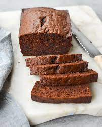

Banana Chocolate Loaf Recipe

Description
A sweet treat to go with your tea!
Ingredients
- 1 and 1/4 cups of all-purpose flower
- 1/4 cup natural unsweetened cocoa powder
- 1 teaspoon of baking soda
- 1 teaspoon salt
- 1 stick of unsalted butter, at room temperature
- 1 cup sugar
- 2 large eggs
- 1 cup mashed very ripe bananas
- 1/2 cup of sour cream
- 1 teaspoon of vanilla
- 1/2 cup semi-sweet chocolate chips
Instructions/Steps
- Preheat the oven to 350° F. Grease a 9 x 5 x 3-inch loaf pan with non-stick cooking spray.
- In a medium bowl, combine the flour, cocoa powder, baking soda and salt. Whisk until there are no more
lumps in the cocoa powder and the mixture is well combined. Set aside.
-
In a large bowl or electric mixer fitted with the paddle attachment or beaters, beat the
butter and sugar until light and fluffy, 2 to 3 minutes. Add the eggs one at a time,
incorporating well after each addition. Add the dry ingredients and beat gently until just combined.
Add the bananas, sour cream and vanilla and mix on low speed to combine. Fold in the chocolate chips. Do not overmix.
-
Pour the batter into the prepared loaf pan and spread evenly with a spatula.
Bake until a toothpick inserted into the center comes out with a few moist
crumbs attached, about 1 hour and 10 minutes. Let the loaf rest in the pan
for about 10 minutes, run a blunt knife around the edges to loosen, then
turn it out onto a rack to cool completely.
Link to original recipe: Banana Chocolate Loaf